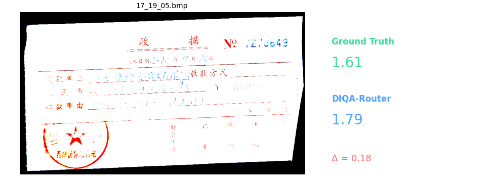
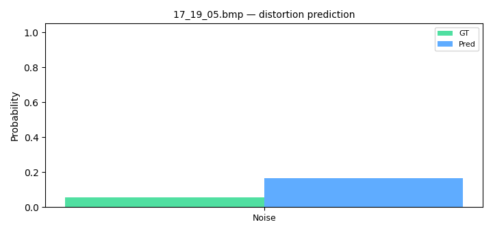
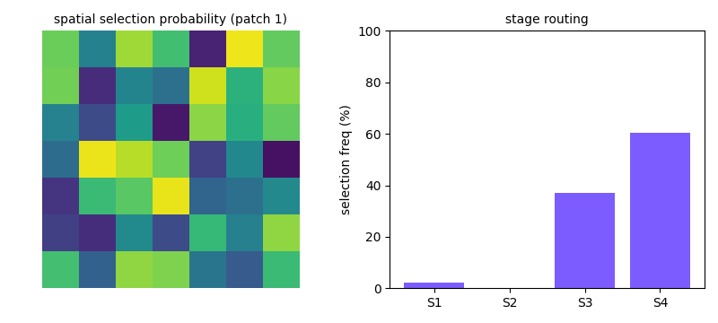
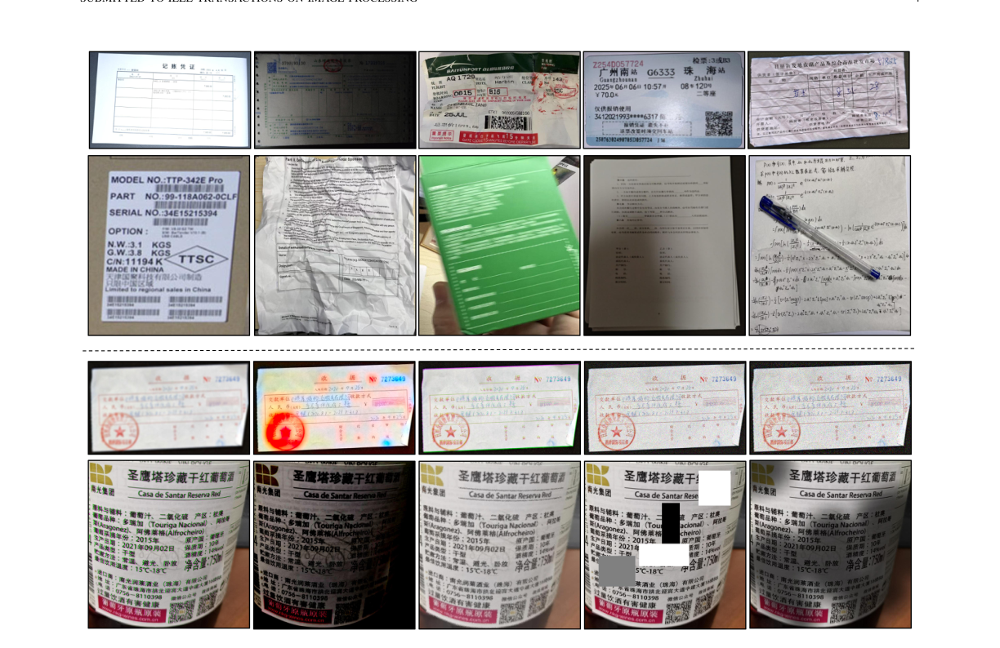
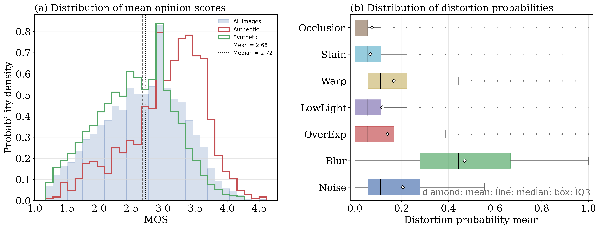

Document image quality assessment (DIQA) is essential for reliable document recognition and enhancement, yet remains challenging due to the heterogeneity of real-world degradations in both the spatial extent of quality evidence and the feature level required for their characterization. Existing methods typically fuse multi-level features in a fixed, content-agnostic manner, treating all regions and scales as equally informative. We propose DIQA-Router, a distortion-aware framework that learns where and at which feature level to perceive document quality. It dynamically routes informative spatial regions and hierarchical features, followed by dual-domain attention that models spatial dependencies and cross-scale interactions. We further introduce DIQA-6K, a benchmark containing 6,125 authentic and synthetically degraded document images with global MOS and fine-grained annotations over seven distortion categories.

Animated comparison of predicted MOS against human-rated MOS across representative document images. GT vs Pred, with the absolute error color-coded (red = larger error).

Seven distortion dimensions (noise, blur, overexposure, low light, warp, stain, occlusion) — ground truth vs predicted probabilities, animated per category.

Per-patch spatial routing heatmaps — the router adaptively selects where to look depending on the degradation type and content.
6,125 document images (1,500 authentic + 4,625 synthetic) across diverse scenarios, with global MOS and seven distortion categories.


| Method | PLCC ↑ | SRCC ↑ | KRCC ↑ | MSE ↓ |
|---|---|---|---|---|
| WaDIQaM | 0.9305 | 0.9301 | 0.7848 | 0.0562 |
| DBCNN | 0.9266 | 0.9252 | 0.7767 | 0.0591 |
| MUSIQ | 0.8736 | 0.8751 | 0.7037 | 0.2899 |
| TOPIQ | 0.9448 | 0.9449 | 0.8077 | 0.3534 |
| YOTO | 0.9226 | 0.9200 | 0.7673 | 0.0902 |
| DIQA-Router | 0.9502 | 0.9501 | 0.8179 | 0.0401 |
Best in green, second-best in yellow. See the paper for cross-dataset and ablation results.
@article{chen2025router,
title = {Route What Matters: Distortion-Aware Feature Selection for Document Image Quality Assessment},
author = {Chen, Baoliang and Wu, Ruochen and Zhou, Zhihua and Zhang, Qiudan and Wang, Xu},
journal = {arXiv preprint},
year = {2025}
}